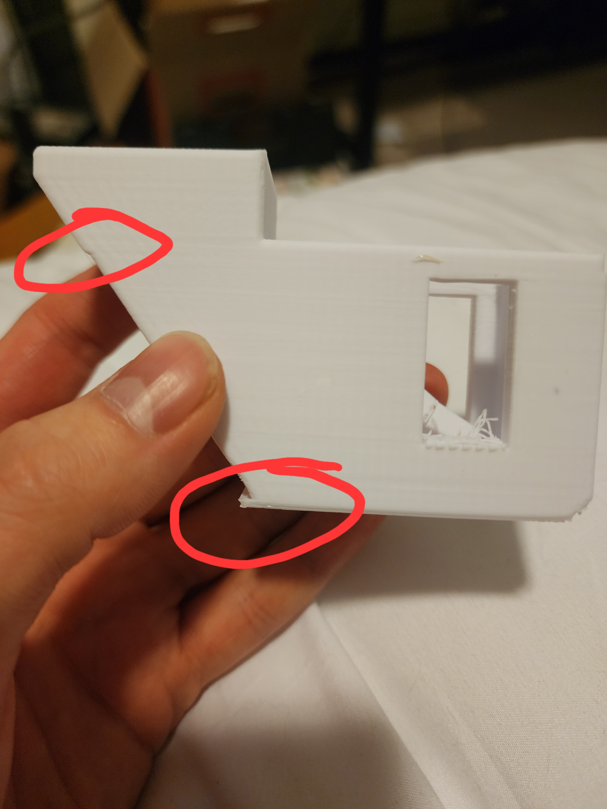
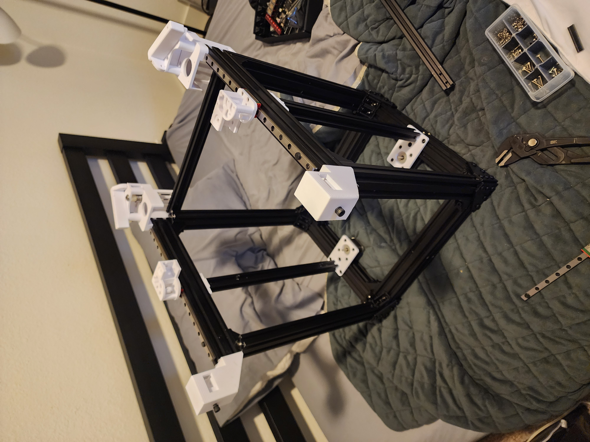
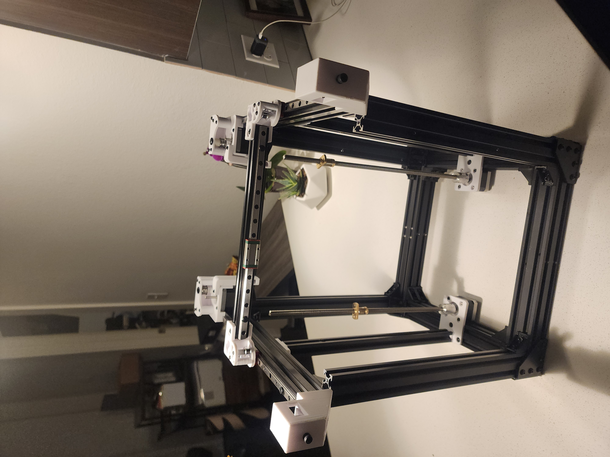
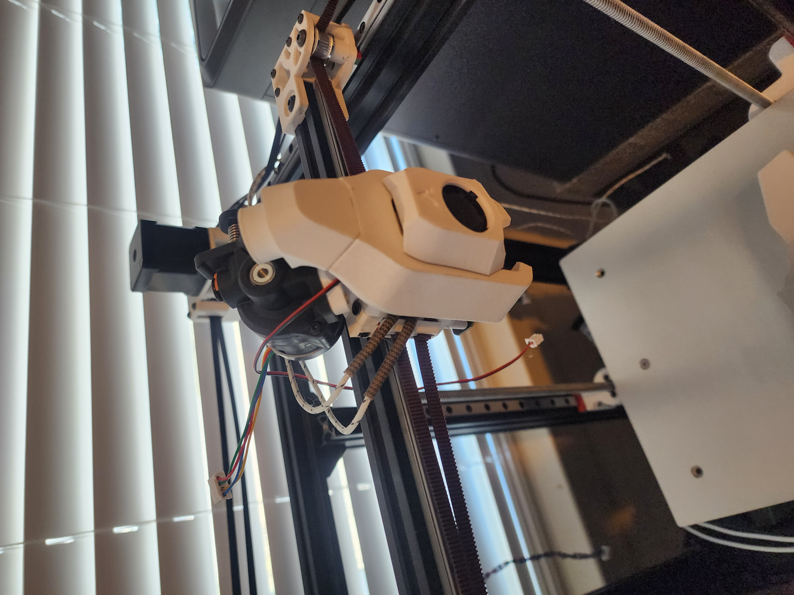
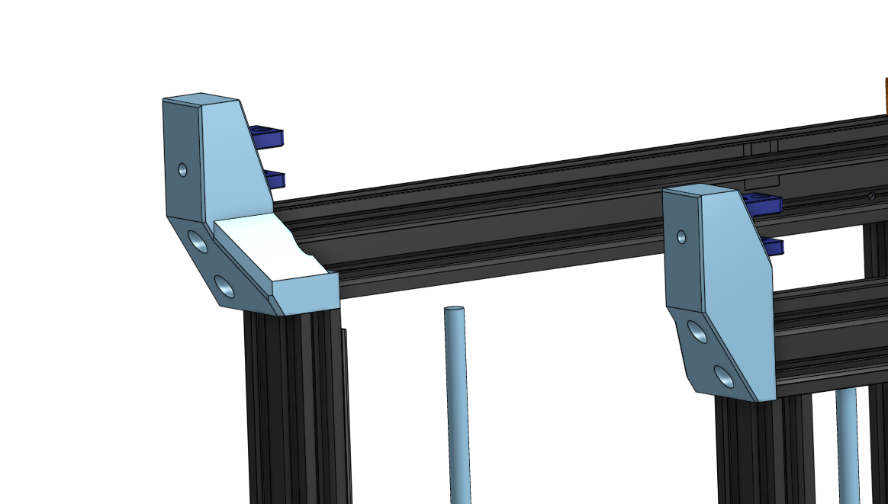
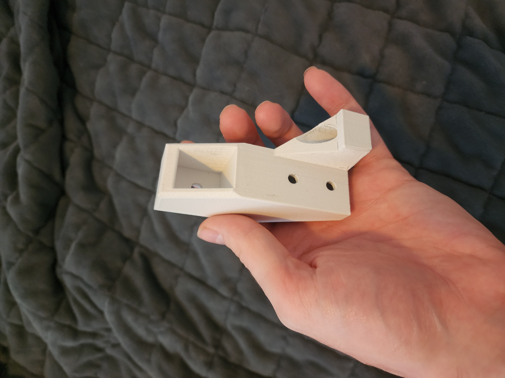
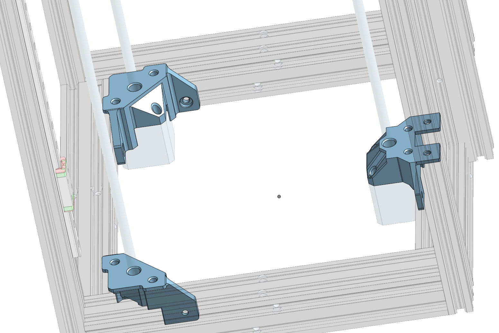
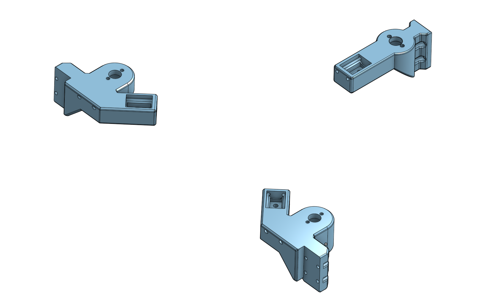
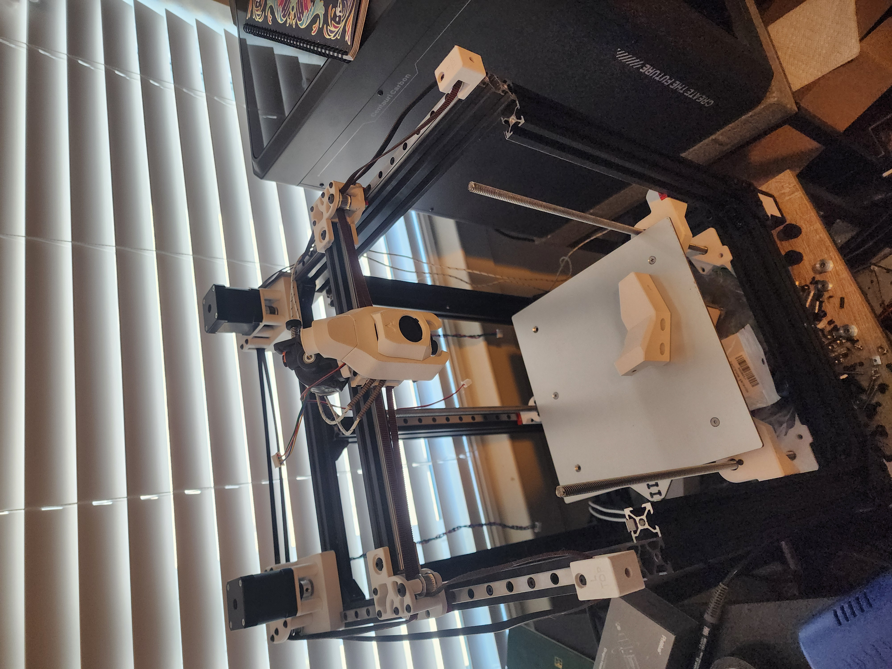

Project
Custom 3D Printer Build
A custom-built 3D printer focused on assembly, calibration, and improving print speed, and pushing the limits of the hardware and software.
Why did I decide to build a 3D printer? Well first I got rather frustrated at the performance, or rather the lack of it that my previous heavily modified ender 3 pro had. So I found a project by Segei Ibis on Printables. It is two Ender 3s put togather to create a better printer. However, I ran into a problem rather quickly. My Ener 3 was lets say "not stock" so I had a bunch of parts that wont work with the duender platform. So in an act of overambition I decided that I would take matters into my own hands and work on an overhaul of the project to really push the platform to it's limits.
Build Progress

Example of Poor performance
During the initial prints of the Duender parts, my current printer was shifting the layers, as highlighted in the YouTube thumbnail red circles. This was caused by the stepper motors being unable to move and skipping steps, resulting in the actual location of the print head being different than the expected location. To solve this, I found that the two linear rails that the bed rides on were binding up during certain parts of the travel along the y-axis, resulting in the motors not being able to move, causing the aforementioned step skipping. This could have also been solved by increasing the amperage given to the motors in the Klipper firmware, but that really doesn't resolve the core issue. Also, I had little faith that the system could properly handle increasing the amperage that much.

First Assembly of the Frame
After getting the initial printing figured out for the part,s I did this assembly of the aluminum cannel. Making sure that the whole frame is square to itself is extremely important; tuning the thing is a nightmare (ask me how I know). I had a fairly flat stone countertop to work on, so I think I got the frame quite square.

Getting the Gantry, Motors, and Hardware installed
Here I have assembled the gantry, made sure that it too was square, and installed the motors, pulleys, and idlers. As well as the motors for the bed, the two silver rods extending upwards are T8 lead screws. It is at this point that things began to get, let's say, "ambitious." I didn't like the idea of the bed being moved up and down on rigid rails on only two sides. I also decided that the motors that I had were lacking. Why? Not sure, probably the same reason I wanted to get a new graphics card despite mine working perfectly fine. On top of that, the design of the front belt tensioners was starting to make me see red whenever I looked at them. So let the scope creep begin.

The Print Head
But first, the print head needs to be addressed; this is a rather important part of the printer, as it is the thing that actually squirts out the plastic. Now the original Duender uses a custom print head designed by the creator. I did not have the parts for that, and I felt that if I was going to order parts, then I would go with something I could get more performance out of. At first, I was trying to make my own print head, but I eventually found a project called "Archetype" created by Armchair Industries. So I decided that I should use something with an existing robust ecosystem to move the project along instead of stubbornly insisting on creating my own.

Slim Belt Tensioners
The first thing I decided to tackle is the front belt tensioners, I didn't like the profile of the previous ones. I decreaced the amount it sticks out by 3/4 of an inch and I added a spot for a third bolt preventing it from twisting. It's also at this point that I decided to start printing in a more robust plastic. However, the current Ender 3 pro that I had could not print more engineering type plastics. So..... I got a new printer and tore down the Ender for parts. I ended up getting an Elegoo Centuari Carbon so all parts from now on will be printed in white Glass Fiber ABS.

Here is one of the tensioners printed in glass fiber ABS.

Doing Somthing About the Bed
At this point, I am looking to upgrade how the bed works. The system that I decided to go with is a tri-point z-axis. With this system, you control the print bed with three independent points connected to T8 lead screws. With 3 points of control, you can completely control a plane, aka the bed. This makes the only variable that makes things difficult is the actual bed itself and how flat it is. With that to start, I made the motor mounts to attach to the base aluminum extrusions. They are held on with 2 M5x8 bolts holding on the front two mounts and 4 M5x8 bolts holding on the center rear mount.

Mounts for the Bed Itself
Next, I made the counterpart to the motor mounts, the mounts for the bed. Each bed mount contains a section at the end made up of two M3 rods positioned above and on either side of a magnet in the center. This magnet holds a steel ball attached to the bed, allowing it to rotate and move around freely while still being held down to the mount. Then the way that the mount is actuated up and down is on an MGN9H x 300mm rail on each mount, which constrains the movement to just the z-axis. Then the lead screw is attached to the mount with what's called an old ham coupler that allows the side-to-side play of the lead screw to not affect the movement of the mount, again constraining movement to only up and down.

Where The Project I Right Now
As it stands, the next step for the printer is to start hooking up the electronics and power systems. I decided to make a DIN rail system to make it modular for ease of working on and for future upgrades. I also don't really like how the bed mounts turned out. They don't really have the range of motion that I want them to have, so I am working on a v2 as well for the bed system.

Links and Stuff
Here is the link to the Onshape for this project: Tri Bed MGN9h
Duener Project by Sergei Irbis on Printables: Duender MGN9H Ender-3 CoreXY convertion